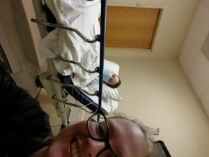
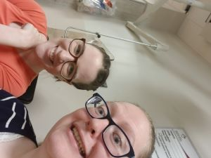
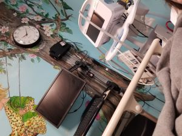

Hospital Visits
Hospitals are nothing new for my roommate and I. We keep a count of how many months we can go before having a trip to the ER or having surgery. Mostly it is Cait who has all of the hospital visits, but I'm there as well. Sometimes, I don't know who is more scared. I have had to sit in the waiting room for two hours when the procedure should only take 15 minutes. I have watched the surgeon cut her open in the ER room and perform emergency surgery. I have had to catch her when she faints.
The thing is though, I wouldn't want it any other way. She is there for me in ways that are not so obvious, but just as impactful. So yes, hospital visits happen every 2-6 months. Sometimes they are planned, sometimes they are not. But when you live a life with chronic illness, and with rare diseases as well, that seems to be one of the constants of life.
  The Unlikely Situation of Friendship
Caitlin grew up in California (not going any more specific because #internetsafety) and I grew up in Arizona. I started college around the time that she started high school, and then she went to a college in CA for a few semesters before deciding to come up to Idaho for school. The first night I met her, she was in the front room of our apartment, with her IV pole hooked into her feeds, and reading a book like it was the most normal thing in the world. For her world, it was. For my world, that was going to become the norm (seeing it at least)
The amount of things that had to line up for us to be roommates when we were both at a place where we needed new friends is a list that can go on forever and ever. The experiences that we had bonded us and while we did not hit a twelve foot mountain troll over the head, J.K. Rowling put it perfectly in Harry Potter and the Sorcerer's Stone. “There are some things you can't share without ending up liking each other, and knocking out a twelve-foot mountain troll is one of them.” Our twelve-foot mountain troll just happened to be panic attacks, anxiety, depression, PTSD, medical emergencies, hospital visits, near death experiences, and a 7:45 class that we took together.
Encounters in the wild!
Our trips are all run in some of the most remote areas of the United States. We share these areas with lots of critters both large and small. Here are some tips on what to do if you should find yourself face to face with one.
Scorpions: There are hundreds of varieties of scorpions, most of them
being harmless. There
are, however, a
handful of them that can be dangerous and even potentially lethal. Scorpions can be found in almost every
ecosystem and are very adaptable to their environment. The scorpion that calls Phantom Ranch in the Grand
Canyon
home is the Bark Scorpion, the most venomous in the United States. Do not worry though, the bark scorpions
are
only lethal to their prey and luckily humans are not on that list!
They spend the day hiding and crawl out at night to hunt. They will eat crickets, moths, spiders and other
insects. Many compare their sting to an intense bee sting. Relief can be found with ice, aspirin and
time.
When in the canyon, pay attention to where you are walking at night. Always wear your shoes or sandals.
Always
have a light with you to see where you are going. Never try to capture a scorpion and if you get stung, see
your
guide immediately.
Big horn sheep: For many people, bighorn sheep symbolize the rugged
mountain west. It is
one of two species of
wild sheep in North America. It’s compact body is muscular with chocolate brown fur. Most weigh 160-250 lbs.
They have exceptional vision, hearing and smell that helps them detect and avoid predators.
Their large curved horns can weigh up to 30 lbs. Females also have horns but they are short with a slight
curvature. Horns are used as tools for eating and fighting.
If you encounter a big horn sheep, don’t agitate it. The park service asks that you stay 100 feet away from
big
game animals. Leave them enough room for escape if they feel threatened.